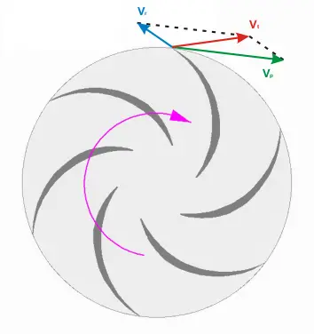

短答
noindex 告诉愿意遵守的抓取程序不要把这个 URL 留在索引里。该 URL 仍然可以被获取。如果你需要这条指令被看到，就不要同时在 robots.txt 里阻止这次获取。不要给你仍想被找到的 URL 加 noindex。

定义
noindex 可以写在 meta robots 里，也可以写在 HTTP 头里。它作用于返回它的那个 URL。模板如果意外地给每个产品页都加了 noindex，那是模板缺陷，不是文案修改。canonical 和 noindex 放在一起需要有意识的选择：不想被索引的重复页可以 noindex，也可以规范到负责页。随便两者都做，文档就不清楚。
页面上怎么出现
获取 URL，读 HTML 和响应头里的 robots 指令。确认 robots.txt 没有禁止你需要被获取的 URL。检查的是模板样本，不是一个首屏。分面或站内搜索 URL 常常是有意 noindex 的地方。关键商业页不是。
要检查什么
- 从线上响应读取 noindex，而不是从设计文件读取。
- 如果 noindex 必须被看到，就不要在 robots.txt 里禁止同一个 URL。
- 指令大面积出现时修模板。
- 不要给拥有规格的 URL 加 noindex。
一个结构示例
一个预发标记把 noindex 留在了线上阀门系列模板上。每个系列 URL 都请求不被索引。修复是从模板去掉该指令，确认规范标记，并复审一批 URL 样本。不承诺恢复排名。
它不声称什么
去掉错误的 noindex 不保证排名或 AI 引用。Mika 报告这条指令。它不承诺恢复收录。
Mika Visibility 把它归到哪里
noindex 是被获取的 URL 上的一条索引指令。 Mika Visibility 把这项检查放在 SEO 健康轨道上，和可抓取性、状态码、页面基础放在一起。SEO 增长仍是另一个问题：哪些覆盖还没有写出来。GEO 仍是另一个问题：认真的读者能否在页面上找到可支撑的回答。没有混合总分。
常见问题
noindex 请求抓取程序做什么？
noindex 告诉愿意遵守的抓取程序不要把这个 URL 留在索引里。该 URL 仍然可以被获取。如果你需要这条指令被看到，就不要同时在 robots.txt 里阻止这次获取。不要给你仍想被找到的 URL 加 noindex。
为什么 robots.txt 会干扰 noindex？
noindex 可以写在 meta robots 里，也可以写在 HTTP 头里。它作用于返回它的那个 URL。模板如果意外地给每个产品页都加了 noindex，那是模板缺陷，不是文案修改。canonical 和 noindex 放在一起需要有意识的选择：不想被索引的重复页可以 noindex，也可以规范到负责页。随便两者都做，文档就不清楚。
清掉 noindex 能保证排名吗？
去掉错误的 noindex 不保证排名或 AI 引用。Mika 报告这条指令。它不承诺恢复收录。
下一步
做一次结构化的 SEO 与 GEO 审计，看健康发现、增长缺口，以及可以执行的蓝图。
更清楚的实体、回答、证据和上下文，让页面更容易被理解和转述。任何回答产品中的结果都不保证。